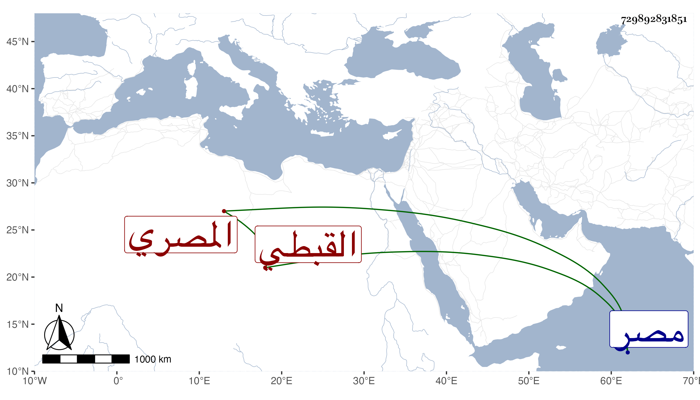

0902Sakhawi.DawLamic.ITO20230111-ara1.EIS1600.729892831851
Biography ID: 729892831851
570
فرج بن ماجد سعد الدين بن المجد القبطي المصري الآتي أبوه ويعرف بابن النحال بنون ومهملة مشددة وآخره لام . ولد في أوائل القرن بمصر القديمة وأبوه يومئذ نصراني فنشأ مسلما تحت كنف أبيه وتمهر في الديوان وخدم في عدة جهات ، وولي بعد موت أبيه نظر الإسطبل ثم كتابة المماليك ثم نظر الدولة ثم الوزارة غير مرة والاستادارية وما أفلح ولا أنجح بل كان غير مسعود في ولاياته وحركاته حاد المزاج كثير الظلم مع صدق لهجة ومواظبة على الصلوات وكونه من أعيان الكتاب ورؤوس المباشرين . مات بطالا في جمادى الآخرة سنة خمس وستين وقد زاد على الستين وكان جامدا كريها سامحه الله وإيانا .
